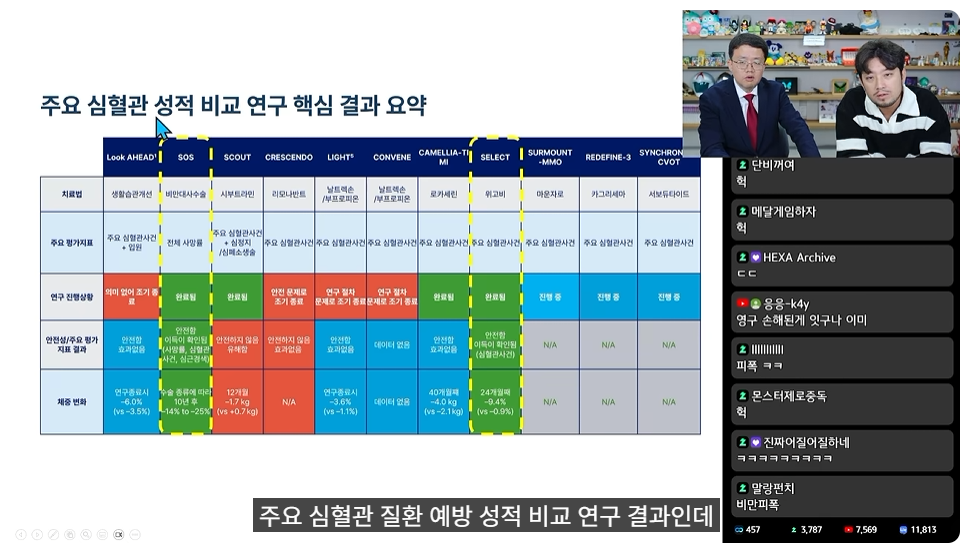
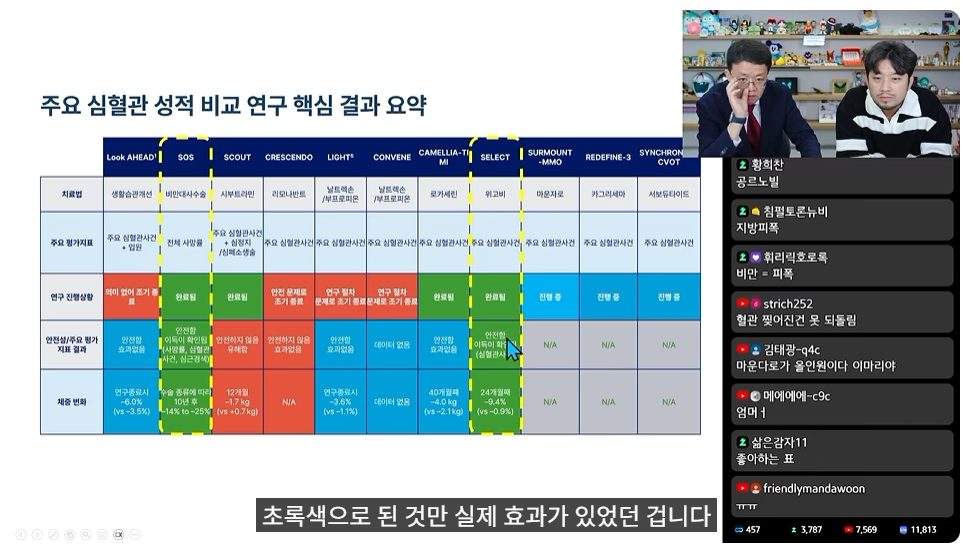
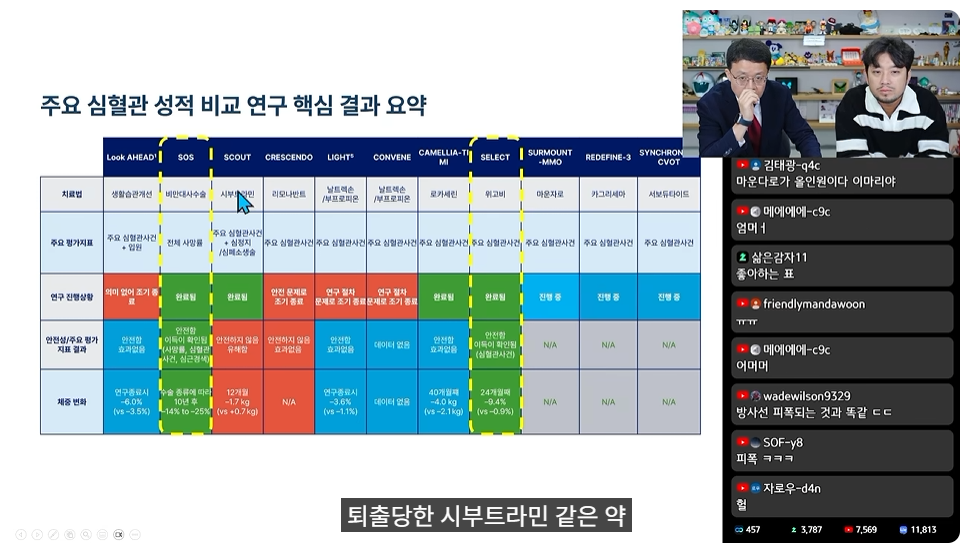
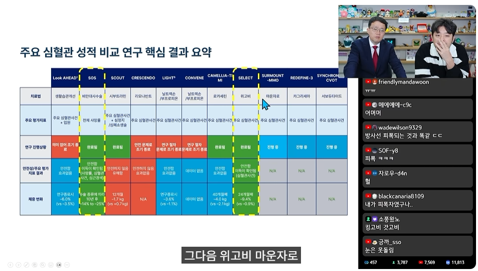
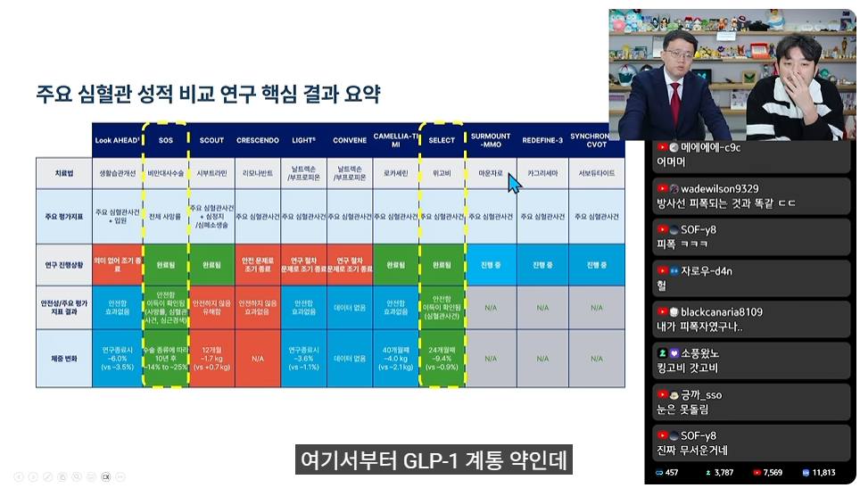
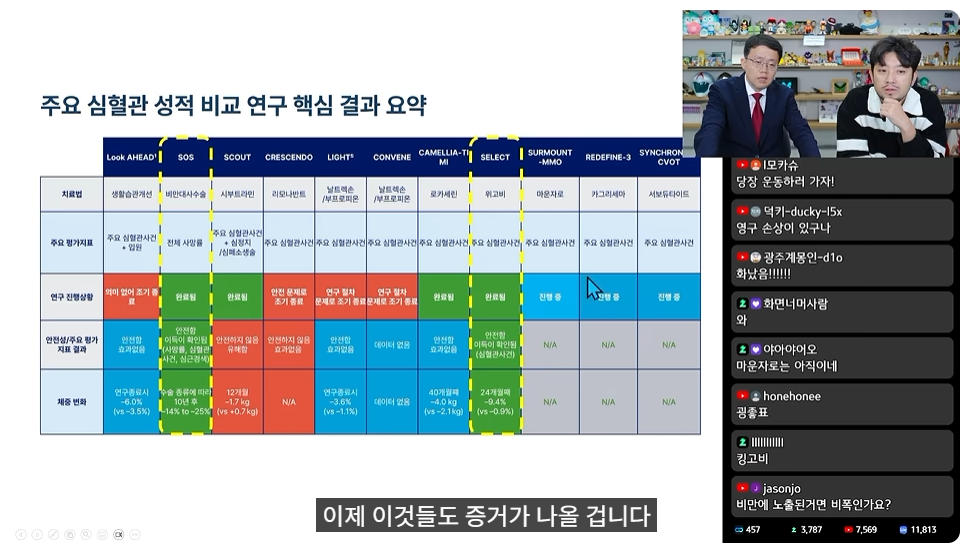
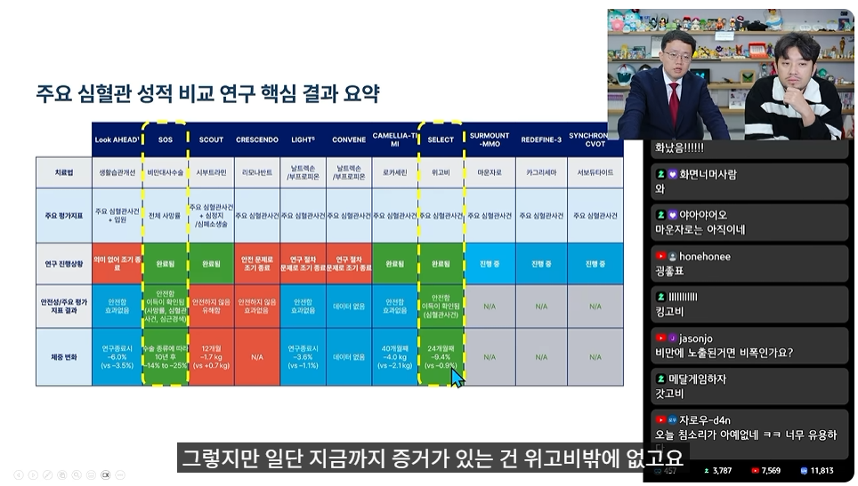
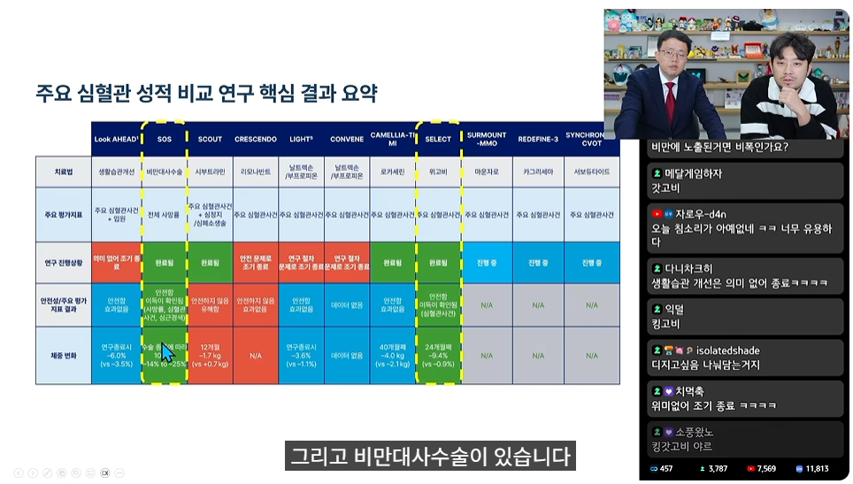
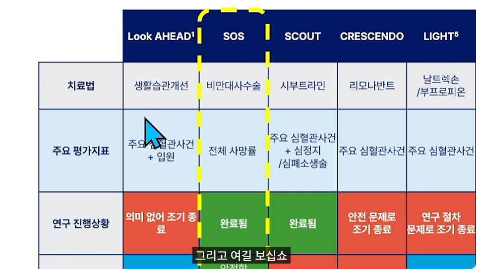
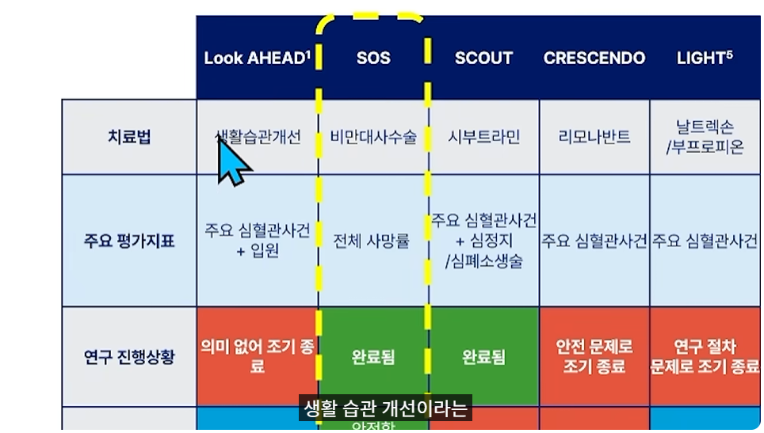
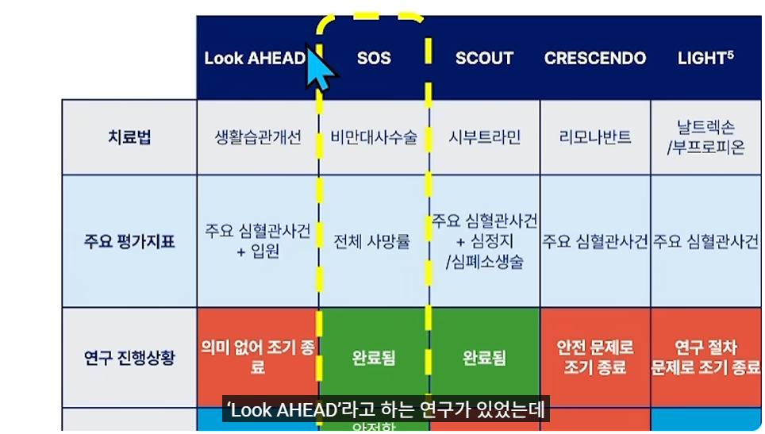
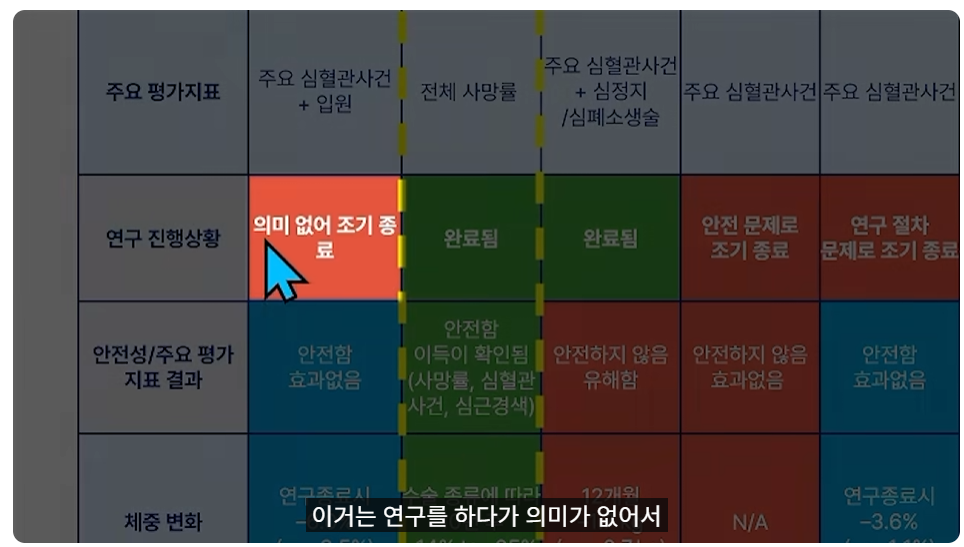
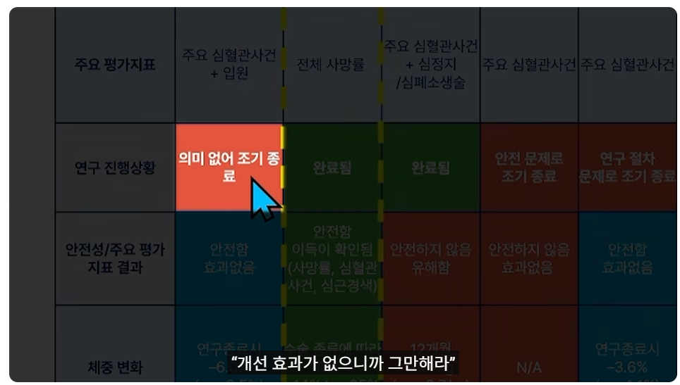
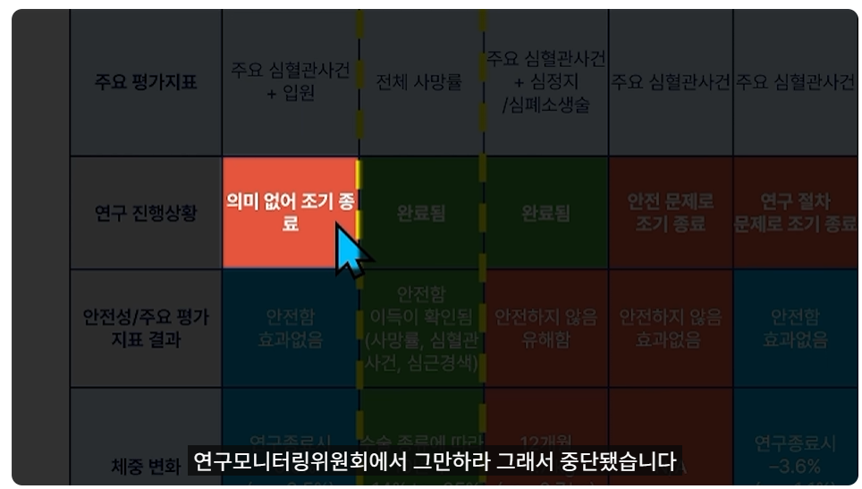
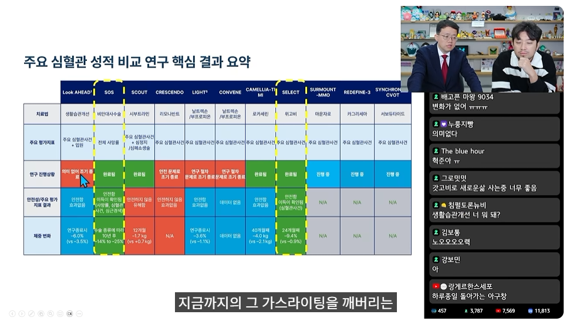
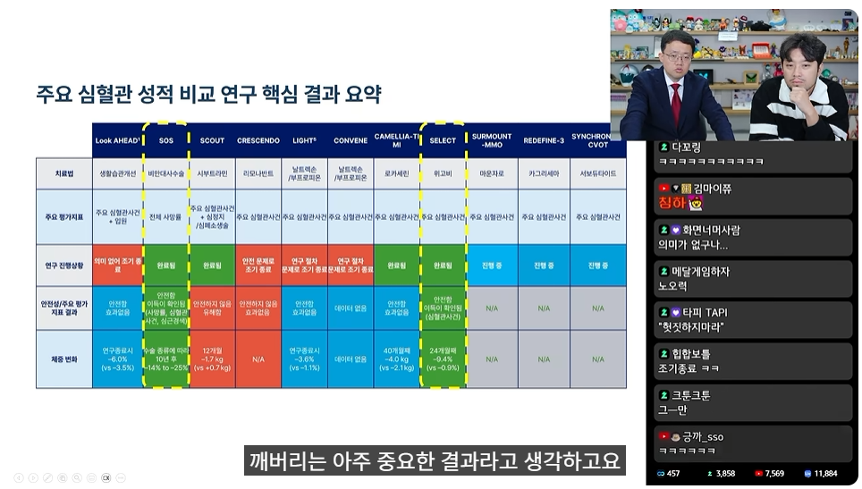
















살이 찐건 결과고 원인은 호르몬 이상임 살이 쪄서 건강이 안 좋아지는게 아니라 건강이 안 좋아져서 살이 찌는거라고 빡대가리들아 원인을 제거하면 살은 알아서 빠짐 생활습관으로 뺄 수 있다고? 당연히 가능하지 뭐 병 걸리면 무조건 병원가서 약 먹고 치료 받아야만 낫냐? 그냥 자연 치유 되는 경우도 있지 근데 그거야 경증이니깐 가능한거고 중증이라 자연 치유 안된다고 그게 의지박약이라는건 걍 빡대가리 소리임
우울증 환자도 예전엔 의지박약 소리 들었겠지..
긍정적인 사고좀 하라고 하고 힘좀 내라고 하고
왜 이렇게 우울해 하냐고 하고 ..
아마 우울증 약물치료 말고
긍정센터 이런걸로 돈 버는 집단이 많았으면
이것도 약물치료 들어오는데 한참 걸렸을 듯
비만은 관련 산업이 너무 많아 ..
솔직히 위고비 마운자로 나온것 조차 기적임
이제는 수많은 비만 관련 이익집단들이 들고 나서겠지
팩트로 데이터를 보여줘도 자신이랑 주변사람은 생활습관 개선으로 감량하고 유지중이라는
사람은 꼭 나오네 걍 과학은 개무시하고 꺼드럭대고 싶나봄
이런사람 특 자신 - 그럴수도 아닐수도 있음
주변사람 - 실제 친구나 지인아님, 걍 유튜브 0.3%성공사례들을 뇌내필터로 주변인으로 인식
위고비/마운자로가 비만에만 효과 있는게 아님 도박,마약,흡연,음주 등 중독이라 느껴질거에 다 효과가 있음
비만인이 맞을때 후기보면 먹는거에 대한 충동이 안느껴진다는거 라는 후기가 자주 보임
거의 비만인에게 먹는건 저 위에있는 도박 마약 흡연 음주급임
흡연하던걸 멈춘놈한테 세상 독한놈이라고 하면서 왜 비만인이 살빼는건 의지로 된다고 하는거임
전세계 흡연자도 의지가 없어서 매년 금연결심함?
한때 우울증도 의지박약이라했던 시대가 있었지
돈없어서 위고비 나눠맞기 1.0으로만 하는중인데
1.0만 꾸준히 쳐 맞아도 그냥 효과가 계속 유지됨
아니 평소 소주 3병에 안주 존나 쳐먹어도 배부른게 그냥 그랫는데
요즘은 반병에 음식 얼마 먹지도 못해
식욕은 그냥 귀신같이 잡아줌
게으른것도 맞고 의지가 빈약한 것도 맞음
그 빈약한 의지를 월 40만원으로 만회가 되는데
자기돈 쓰고 자기가 맞겠다는데 왜 비난하는거지
궁금한점
비만질환은 살이쪄서 생기는것인지 질환이 생겨서 살이 찌는것인지?
전자라면 처음 한번 비만이 되는것은 막을 수 있는것인지?
후자라면 어떤이유로 발병하는지?
혹시 유전인지?
유전이 90%
유전때문에 억까당하는 비율도 높고
성장기 잘못된 식습관을 주입당해서 두뇌가 망가지는 경우도 많고
다른 사람도 그래야 된다는 아닌데 애 낳고 힘들어서 살개쪘다가 부부 같이 이악물고 운동하고 생활습관 바꿔서 15kg 10kg 씩 뺐는디... 진짜 힘들었고 어렵긴했지만 되긴되던데..
저 PPT에서 '생활습관'을 뭘로 정의했길래 아예 소용 없다고 나온겨? 식단은 제외한건가? 저 실험의 전제조건에 대한 정보가 너무 없어서 판단이 어려운데? 실험에 대해 얘기하는데 머리자르고 팔다리 다 자르고 '생활습관개선 의미 없음' 이 결론만 띡 던지면 댓글에 혼동 올 수 밖에 없지.
궁금한게 저건 어떤걸 기준으로 한건지 궁금함
그냥 일반적으로 비만 언저리에 있는 사람들도 포함된건지
아니면 중증비만환자들만 포함된건지
나도 그렇고 주변에서 “노력“해서 비만 탈출하고 식습관 생활습관 개선한 사람들 많은데
인터넷에선 자꾸 그게 불가능하다고 하니깐
주변도르 하려는건 아닌데 아구통교수랑 인터넷 말만 보면
일반인이 비만약 없이 비만 탈출 하는건 불가능하다는 식으로 말하잖아
중증비만환자면 그럴 수 있겠다 싶은데 그냥 과체중들은 아니라고 생각하거든
그리고 ”응 과학적으로 호르몬이 날 이렇게 만들었어~ 노력을 하라고? 너 과학이랑 기싸움함? 노력해도 안된다고 아구통 돌린다? ㅋㅋ“ 하는 애들 보면
학창시절 책상에 앉으려는 노력도 안하면서 공부 ㅈ도 안하고
”응 공부는 유전자빨이야“ 하는 패배주의에 찌든 커뮤찐따 보는 거 같아서 좀 불편함
개붕이들은 죄다 약써야할만치 심각한 비만인가보지 설마~
유독 개드립에서 유전자 만능론이 대세긴해 ㅋㅋ 뭔 키작은 애들 운동한다고 아무짝에도 쓸모없다 하질않나
개드립 기준 비만은 100kg이상 일껄
다이어트 성공 했거나, 정상 체중인 사람들은
너가 말한대로 "약 없으면 다이어트 못한다" 이거에 반발 하는거고.
돼지새기들 뭔 태어날때부터 돼지엿나 ㅋㅋ 회사 대리년 여름에쉰내나고 그러는데 식단한다고 까불면서 컵라면 처먹는런 스리슬쩍 치우고 사진찍던데
위고비가 마약중독에도 효과가 잇다고 발표한거보면 사실 비만인이 음식을 참는건 마약급이란것과 비슷한거아닐까